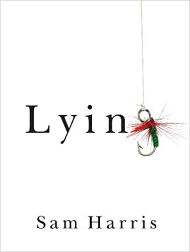
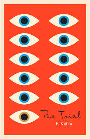

Books & Essays
An eclectic collection of those books containing some idea which has been influential on my thinking. For a full list of what I've enjoyed visit goodreads.
I take obscene liberty in omitting the post-colon parts of some titles.
Nine Favourites


By Topic
People

Baghdad Diaries
Caesar

Code Girls

Down and Out in Paris and London

Eichmann in Jerusalem

The Fire Next Time
The Gulag Archipelago

A House in the Sky

Infidel
Letters to a Young Scientist

Mao: The Unknown Story

Mortality

Night

Man's Search for Meaning

Reading Lolita in Tehran

Surely You're Joking Mr. Feynman!
Unfollow
Idea Generation
Against Empathy
Against the Grain
The Beginning of Infinity

The Better Angels of Our Nature

Capital in the 21st Century

Chaos

Complexity
Conscious
Doing Good Better
The Elephant in the Brain
The Expanding Circle

The Five Invitations

Guns, Germs, and Steel

Knowledge and the Body-Mind Problem
The Logic of Scientific Discovery

Sam Harris
Lying
The Moral Animal
Moral Tribes

The Myth of the Rational Voter

On Bullshit
On Tyranny

The Precipice
Radical Markets

The Righteous Mind

The Structure of Scientific Revolutions

Stubborn Attachments

Thinking Fast and Slow

Tribe

Why Information Grows
Idea Analysis

The Ascent of Money
The Blank Slate

Bury the Chains

The Code Book

Enlightenment Now!

How to Change Your Mind

The Moral Foundations of Politics
The Most Good You Can Do

The Open Society and its Enemies, Vol 1+2
Political Philosophy
Poor Economics
The Poverty of Historicism

Relative Justice

A Short History of Nearly Everything
SPQR

Notes on Nationalism

On Inequality
Seeing like a State

Turing's Cathedral

Why Liberalism Failed
Fiction & Other

1984

Animal Farm
Brave New World

Captains Courageous
Catch 22
Consider the Lobster and Other Essays

Exhalation: Stories

Fictions

Hunger
Invitation to a Beheading

To Kill a Mockingbird
Lolita

The Name of the Rose

Purple Hibiscus

Ready Player One
Stories of your Life and Others

The Thing Around Your Neck

Things Fall Apart

Franz Kafka
The Trial
Essays
- Famine, Affluence, and Morality; Peter Singer.
- Harrison Bergeron; Kurt Vonnegut, Jr.
- How to Disagree and Keep your Identity Small; Paul Graham.
- Letter from Birmingham Jail; Martin Luther King, Jr.
- A Modest Proposal; Jonathan Swift.
- Moral Luck; Thomas Nagel.
- On Caring; Nate Soares.
- Science as Falsification; Karl Popper.
- The State of Being Stuck; Ben Orlin.
- The Fable of the Dragon-Tyrant; Nick Bostrom.
- Asymmetric Weapons Gone Bad and Beware the Man of One Study; Scott Alexander.
- The Lottery; Shirley Jackson.
- Three Worlds; Karl Popper.
- All Animals are Equal; Peter Singer.
- If Men Could Menstruate; Gloria Steinem.
- In Praise of Idleness; Bertrand Russell.
- Confirmation vs Falsificationism; Ray Scott Percival.